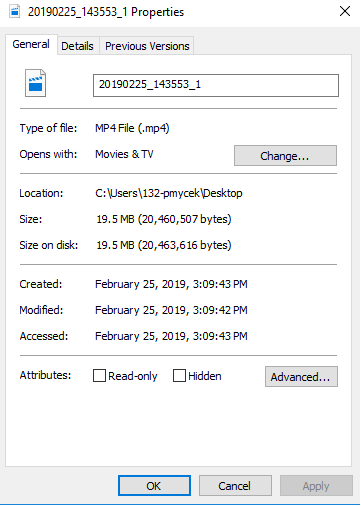
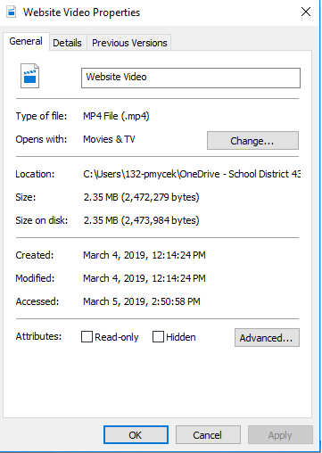

Web Development 101
View the next few steps, and become a pro coder! Make your own website today for free!
How to get started with Brackets
Brackets is an open source, free to use code editor for beginner and professional website developers.
The most common coding type used on Brackets is HTML (Hypertext Markup Language).
Here are some steps to help you on your Brackets journey!
- First, you need to learn how to code using HTML, the most basic of coding languages.
You can learn HTML using tutorial sites like Khan Academy. - After learning the basics, you'll need a place to type your code. Of course, I recommend brackets.

- As soon as you download brackets, you'll need to create your own page.
You can do this by pressing the file button in the top right, and opening your new
project in a folder with a name of your choice. Also, put an image and CSS folder inside of that folder.

How to use Adobe Media Encoder
AME is a program used for changing and uploading videos. Below is the video I recorded and edited using AME.
Drag and drop your video file into the top right, then right click it and press 'exort video settings.'
Below are the settings I used...


Video and audio settings are the most important, so you can keep all of the other settings the same.
Last but not least, here are my video settings before
And after!
The file size changed a lot after being encoded, which allowed me to put it on my website.
Overall, I highly recommend created a website as it is very fun.
There are many steps, but devoting your time into it definetely pays off!
Press here to return to top of page!